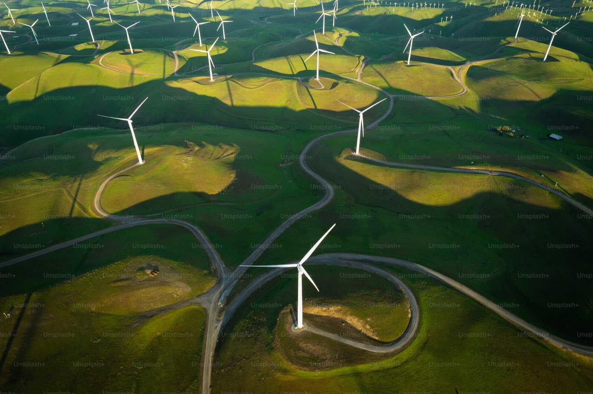

一條完整的
能源價值鏈
五項服務不是五張獨立的報價單，而是同一條鏈上的五段。 您可以只取其中一段，也可以把整條交給我們。

光電系統工程
屋頂型、地面型、水面型與農畜共生案場的全案規劃與統包施工。 從第一次場勘到台電完工掛表，單一窗口到底——您不需要自己當總包， 也不必在五家廠商之間釐清責任歸屬。

光電案場維運
案場的收益不是完工那天決定的，是之後七千個日子裡每一天決定的。 我們以系統可用率與 PR 值作為合約承諾，而不是只答應「每年巡檢幾次」。

區域能源整合
當再生能源佔比越來越高，電網缺的不是電，是把電放在對的時間的能力。 我們以百萬瓦級儲能為核心，結合需量反應與虛擬電廠調度， 為工業區與園區建構具韌性的區域能源骨幹。

能源資訊服務
多數企業不是不想節能，而是不知道電花在哪裡。 我們把發電端、用電端與儲能設備的資料整合到同一個平台， 以分鐘級解析度呈現，並在需量超約前提供預警，而不是事後解釋。

綠電交易服務
綠電不缺買家，缺的是把需求、供給與法規條件兜在一起的人。 我們從您的實際用電曲線出發，試算合理的採購量與時程， 再從自有與合作案場中媒合適合的供給。
合作流程
不論您進入的是哪一段，流程的前兩步都一樣：先把現況看清楚，再談方案。
-
STEP 01
需求訪談與現況盤點
了解場域條件、用電結構與淨零目標時程。這一步免費，而且通常會改變您原本的優先順序。
-
STEP 02
現場勘查與技術評估
結構承載、日照遮蔭、饋線容量、受電設備與空間限制，逐項確認可行性與限制條件。
-
STEP 03
方案設計與財務模型
提供系統設計、發電量模擬與 20 年現金流試算，包含自建、租賃屋頂與合資等不同持有方式的比較。
-
STEP 04
簽約、申請與施工
同意備案、台電併聯審查、能源局設備登記等行政流程由我們承擔，施工期間提供進度回報。
-
STEP 05
驗收、掛表與併聯發電
完工測試、絕緣與接地檢測、IV 曲線基準量測，建立後續維運的比對基準。
-
STEP 06
維運、數據與綠電去化
轉入 O&M 與監控服務，並依您的需求安排躉售、自用或綠電交易的去化方式。